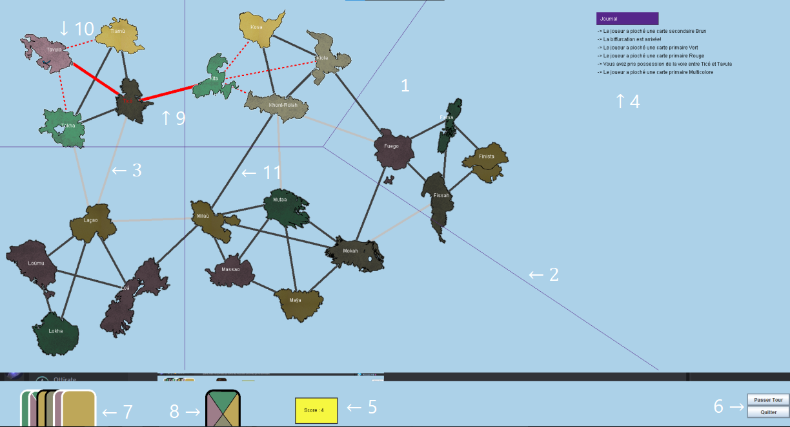
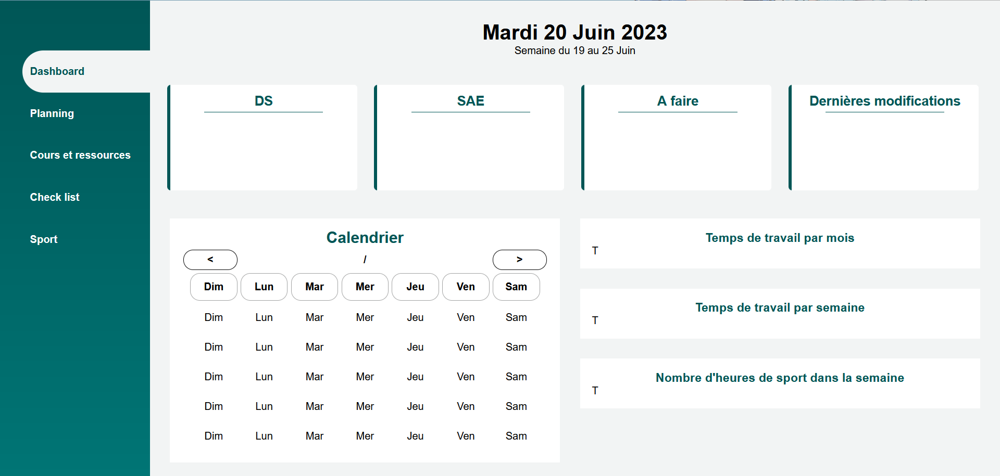
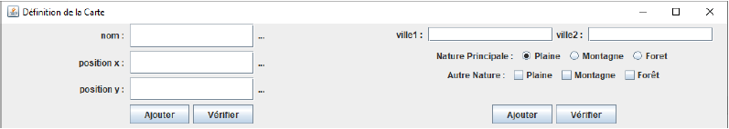
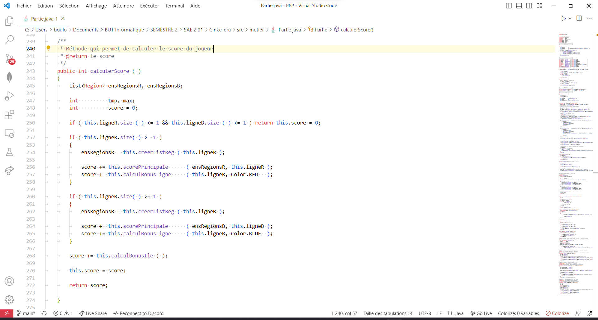
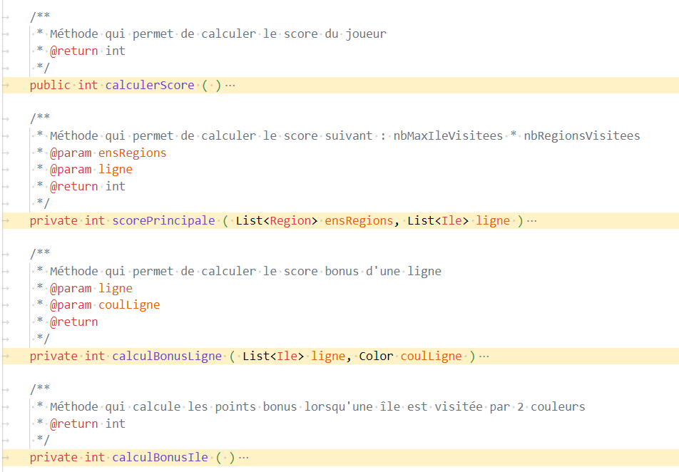
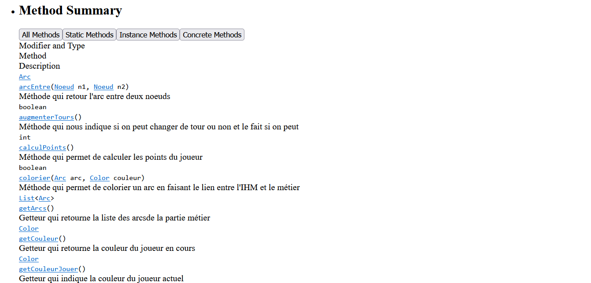
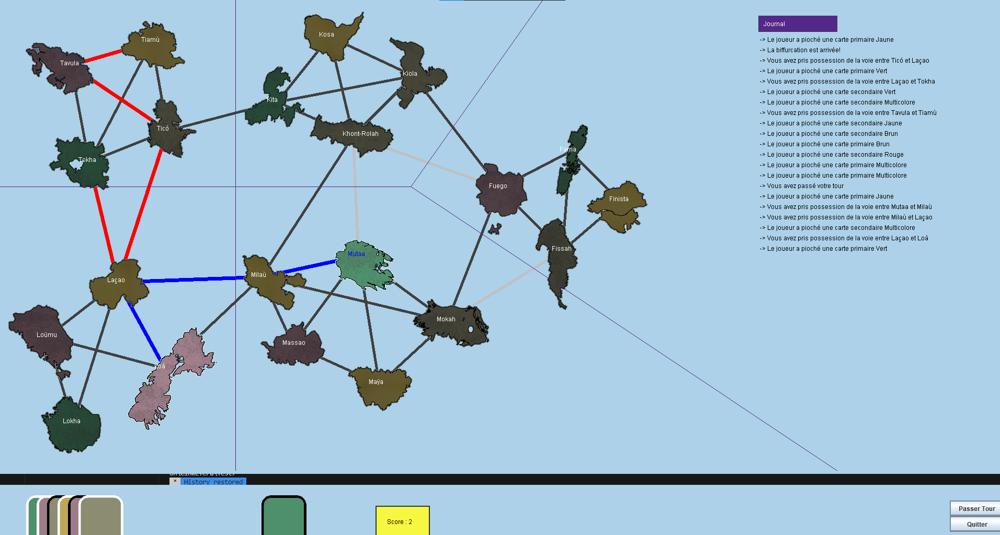
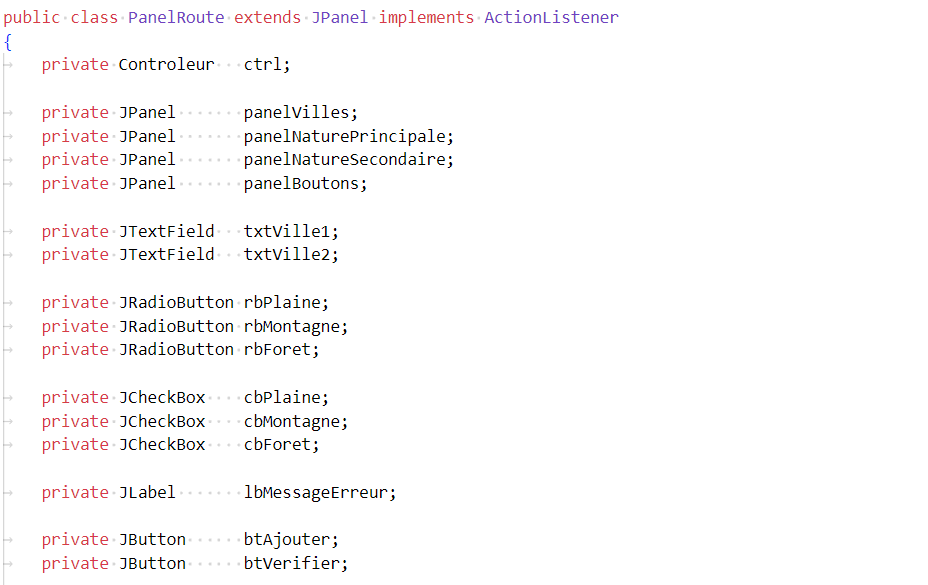
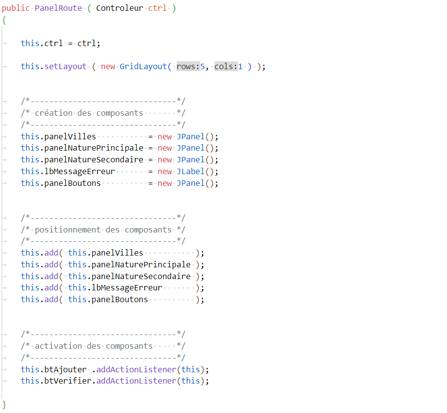

Implémenter des conceptions simples en choisissant les ressources techniques appropriées
Élaborer des conceptions simples en respectant les besoins du client
Veillez à la qualité du code (et à sa documentation)
Faire des essais et évaluer leurs résultats
Développer des interfaces utilisateurs en respectant des normes
Projets
CinkeTera
Dashboard
DS IHM 1
Suivant →
Projet 1 : CinkeTera
Présentation du projet :
CinkeTera est un jeu qui se déroule en 2 manches. Il peut se jouer à deux ou à plusieurs.
Au début de la partie, la couleur avec laquelle vous débutez est tirée au sort.
Le point de départ de la couleur rouge est Tico et le point de départ de la couleur bleue est Mutaa.
Dans ce jeu, vous disposez de 8 cartes couleurs, et 2 cartes jokers. Les cartes couleurs représentent la couleur de l'île que vous devez jouer, tandis que les jokers vous laisse la liberté de choisir la couleur.
Parmis ces 10 cartes, vous disposez de 5 cartes primaires à la bordure noire et 5 cartes secondaires de couleur blanche.
Une manche se termine lorsque les 5 cartes primaires, c’est-à-dire les cartes à la
bordure noire, ont toutes été tirées.

Schéma du jeu
Le plateau
Les délimitations des régions
Les voies maritimes aux points bonus
Le journal
Le résultat du score
Boutons permettant de passer son tour ou quitter le jeu
Le paquet
La carte actuelle
La voie maritime choisie par l'utilisateur
Les voies maritimes pouvant être jouées
Les voies maritimes qui ne sont pas encore jouées
Langage utilisé :
Java
← Précédent
Suivant →
Projet 2 : Site Internet sous forme de Dashboard
Présentation du projet :
Ce site internet est en cours de réalisation. Il permet de connaître différentes informations, notamment sur les cours, sur le sport... qu'il pourra enregisré au fur et à mesure.

Page d'accueil du site
Langage utilisé :
HTML, CSS, JavaScript, PHP
← Précédent
Suivant →
Projet 3 : DS IHM
Présentation du projet :
Lors d'un DS, nous devions créer l'IHM suivante étapes par étapes :

Schéma du jeu
Langage utilisé :
Java
← Précédent
Suivant →
1. : Implémenter des conceptions simples en choisissant les ressources techniques appropriées
Schéma UML :
A refaire
← Précédent
Suivant →
2. : Élaborer des conceptions simples en respectant les besoins du client
Mettre l'image des graphes de la SAE 2.02
Etape 1 :
On commence par développer la structure principale du jeu, qui s'est fait grâce à la SAE 2.02 :
Ajoutez l'image de la SAE 2.02
Etape 2 :
On modifie la structure de base pour mettre selon le rendu souhaité par le client. Trouvez des exemples à donner.
Etape 3 :
On ajoute les différentes contraintes qui nous ont été donné : donner la liste des contraintes
Etape 4 :
On ajoute quelques avenants demandés par le client selon le temps imparti : donner quelques autres exemples
Etape 5 :
On développe le mode 2 joueurs
← Précédent
Suivant →
3. : Veillez à la qualité du code (et à sa documentation)
Convention d'écritures
Indentation Holdman

Méthode qui permet de calculer le score du joueur - SAE 2.01 classe Partie
JavaDoc

Code pour créer la JavaDoc

Page Web de la JavaDoc
← Précédent
Suivant →
4. : Faire des essais et évaluer leurs résultats
Site Web
Afin de s'assurer que la semaine s'affiche correctement, nous devons tester les différentes possibilités :
Lorsque nous sommes le samedi 31 décembre 2022 ;
Lorsque nous sommes le mardi 28 février 2023 ;
Lorsque nous sommes le vendredi 30 juin 2023.
CinkeTera
Lors d'un tour, nous avons du faire différents tests afin de vérifier que les îles dont le joueur pouvait jouer était correctes.

Image de la bifurcation dans CinkeTera
← Précédent
Suivant →
5. : Développer des interfaces utilisateurs en respectant des normes
L'arborescence
IHM : FrameAnneau, PanelRoute, PanelVille
Métier : Carte, Route, Ville
Controleur
Comme nous pouvons le voir, notre IHM contient donc une partie métier, et une partie IHM, qui sont reliés par le controleur
Les conventions
Dans le fichier PanelRoute.java

Respect des normes lors de la création de notre panel

Séparation des différentes parties pour les différencier